Spark
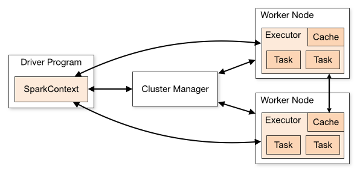
| Term | Meaning |
|---|---|
Application |
User program built on Spark. Consists of a driver program and executors on the cluster. |
| Application jar | A jar containing the user's Spark application. In some cases users will want to create an "uber jar" containing their application along with its dependencies. The user's jar should never include Hadoop or Spark libraries, however, these will be added at runtime. |
Driver |
The process running the main() function of the application and creating the SparkContext |
| Cluster manager | An external service for acquiring resources on the cluster (e.g. standalone manager, Mesos, YARN) |
| Deploy mode | Distinguishes where the driver process runs. In "cluster" mode, the framework launches the driver inside of the cluster. In "client" mode, the submitter launches the driver outside of the cluster. |
| Worker node | Any node that can run application code in the cluster |
Executor |
A process launched for an application on a worker node, that runs tasks and keeps data in memory or disk storage across them. Each application has its own executors. |
| Task | A unit of work that will be sent to one executor |
| Job | A parallel computation consisting of multiple tasks that gets spawned in response to a Spark action (e.g. save, collect); you'll see this term used in the driver's logs. |
| Stage | Each job gets divided into smaller sets of tasks called stages that depend on each other (similar to the map and reduce stages in MapReduce); you'll see this term used in the driver's logs. |
环境部署¶
官方文档
https://spark.apache.org/docs/2.4.8/
下载地址
https://archive.apache.org/dist/spark/spark-2.4.8/
安装目录
/opt/bigdata/spark部署规划
node0：Local (Linux File System & HDFS)
node1node2node3配置为spark集群。
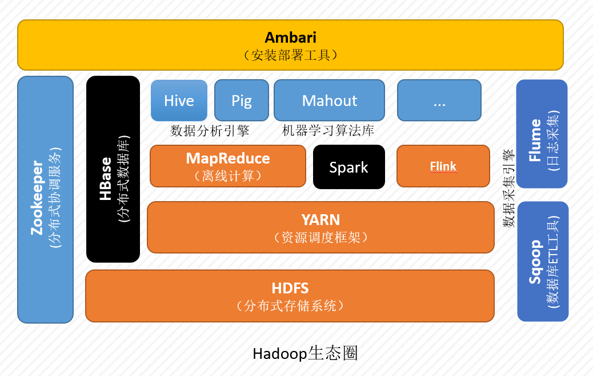
在/opt/目录下创建bigdata目录，并修改目录的所有者和所属组为zhangsan，我们将spark安装到该目录中。
# 创建/opt/bigdata/spark文件夹
# !!! 注意： 因为普通用户没有权限在/opt/目录写数据，所有本次操作使用的是root账户。
[root@node0 ~]# mkdir /opt/bigdata/spark
# 修改/opt/bigdata/spark文件夹及子文件夹的所有者所属组为zhangsan
[root@node0 ~]# chown -R zhangsan:zhangsan /opt/bigdata/spark
[root@node0 ~]# ls -al /opt/bigdata/
total 0
drwxr-xr-x. 3 zhangsan zhangsan 19 Feb 15 08:38 .
drwxr-xr-x. 3 root root 21 Feb 15 08:38 ..
drwxr-xr-x. 2 zhangsan zhangsan 6 Feb 15 08:38 spark
# 退出root账号
[root@node0 ~]# exit
exit
使用xftp等文件传输工具，将spark安装包上传到CentOS 7系统的/opt/bigdata/spark目录中。
本地运行¶
读写Linux¶
本地运行模式开箱即用，只需要Java环境，无需其他任何配置。此时，只能读写本机Linux文件系统中的文件，无法读写HDFS。
解压¶
[zhangsan@node0 ~]$ cd /opt/bigdata/spark/
[zhangsan@node0 spark]$ tar -zxf spark-2.4.8-bin-hadoop2.7.tgz
[zhangsan@node0 spark]$ ll
total 230372
drwxr-xr-x. 13 zhangsan zhangsan 211 May 8 2021 spark-2.4.8-bin-hadoop2.7
-rw-rw-r--. 1 zhangsan zhangsan 235899716 Feb 15 08:42 spark-2.4.8-bin-hadoop2.7.tgz
[zhangsan@node0 spark]$ ln -s spark-2.4.8-bin-hadoop2.7 default
[zhangsan@node0 spark]$ ll
total 230372
lrwxrwxrwx. 1 zhangsan zhangsan 25 Feb 15 08:42 default -> spark-2.4.8-bin-hadoop2.7
drwxr-xr-x. 13 zhangsan zhangsan 211 May 8 2021 spark-2.4.8-bin-hadoop2.7
-rw-rw-r--. 1 zhangsan zhangsan 235899716 Feb 15 08:42 spark-2.4.8-bin-hadoop2.7.tgz
配置¶
无需配置。
启动¶
[zhangsan@node0 spark]$ cd default/bin/
[zhangsan@node0 bin]$ rm -rf *.cmd # 删除Windows平台的脚本（可选）
# 启动 spark-shell 交互式环境（scala语言）
[zhangsan@node0 bin]$ ./spark-shell --master local[*]
22/02/13 12:50:45 WARN NativeCodeLoader: Unable to load native-hadoop library for your platform... using builtin-java classes where applicable
# 可通过此 web 界面查看 spark job 的运行情况
Spark context Web UI available at http://node0:4040
# local[*] 表示使用所有计算资源
Spark context available as 'sc' (master = local[*], app id = local-1644727904419).
Spark session available as 'spark'.
Welcome to
____ __
/ __/__ ___ _____/ /__
_\ \/ _ \/ _ `/ __/ '_/
/___/ .__/\_,_/_/ /_/\_\ version 2.4.8
/_/
Using Scala version 2.11.12 (Java HotSpot(TM) 64-Bit Server VM, Java 1.8.0_202)
可通过spark web界面查job的启动情况，网页中看不到job的运行情况，因为我们还没有执行spark job。
本地模式只有一个进程启动。
Master参数¶
| --master参数 | 说明 |
|---|---|
local |
使用一个Worker线程本地化运行Spark |
local[k] |
使用K个Worker线程本地化运行Spark |
local[*] |
使用* 个Worker线程本地化运行Spark(* =机器的CPU核数)（默认） |
spark://HOST:PORT |
连接到指定的Standalone集群。HOST参数是Spark Master的hostname或IP，默认端口是7077。 |
mesos://HOST:PORT |
连接到指定的Mesos集群。HOST参数是Moses Master的hostname或IP，默认端口是5050 。 |
yarn |
默认以客户端模式连接到YARN集群，集群位置由环境变量YARN_CONF_DIR决定 。 |
Spark2.0以前，yarn分为yarn-client与yarn-cluster
Spark2.0以后，设置--deploy-mode=[client/cluster]以不同模式连接到YARN集群
案例 - wordcount¶
scala> var wordcount = sc.textFile("/home/zhangsan/bigdata.txt").flatMap(line => line.split(" ")).map(word => (word,1)).reduceByKey(_+_)
scala> wordcount.collect()
res0: Array[(String, Int)] = Array((hello,2), (bigdata,2), (study,2))
打开web http://node0:4040 界面，可以查看Job的运行情况，此地址为driver执行任务的查看地址。
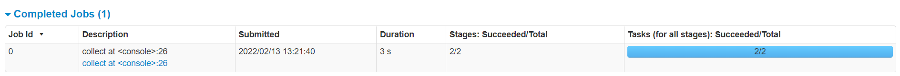
可以看到该Job包括两个stage
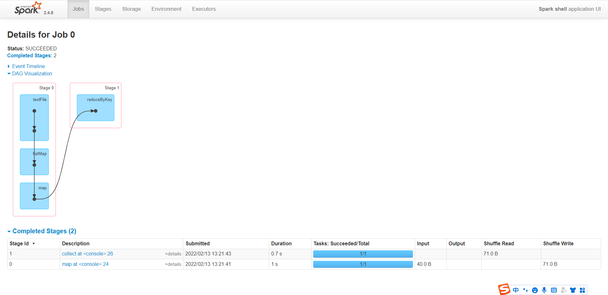
直接解压运行，spark只能读写本地Linux文件系统；接下来我们配置spark，让其能够读写HDFS。
读写HDFS¶
接下来的实验中，我们需要使用Spark读写HDFS，因此，我们需要完成Hadoop伪分布式环境的搭建。
配置文件¶
Spark配置文件spark-env.sh中添加如下行即可。
# 进入spark配置文件存放目录
[zhangsan@node0 ~]$ cd /opt/bigdata/spark/default/conf/
# 重命名配置文件模板
[zhangsan@node0 conf]$ mv spark-env.sh.template spark-env.sh
[zhangsan@node0 conf]$ vim spark-env.sh
# 修改 HADOOP_CONF_DIR配置项
HADOOP_CONF_DIR=/opt/bigdata/hadoop/default/etc/hadoop
测试¶
格式化名称节点¶
启动Hadoop¶
创建文件夹¶
上传测试数据¶
wordcount¶
$SPARK_HOME/bin
scala> var wordcount = sc.textFile("hdfs:///input/bigdata.txt").flatMap(line => line.split(" ")).map(word => (word,1)).reduceByKey(_+_)
wordcount: org.apache.spark.rdd.RDD[(String, Int)] = ShuffledRDD[11] at reduceByKey at <console>:24
scala> wordcount.collect()
res3: Array[(String, Int)] = Array((hello,2), (bigdata,2), (study,2))
退出¶
在以上两个步骤中，我们使用了spark-shell命令进入了交互式编程环境，编程语言为scala。那如何使用Python语言进行Spark编程呢？可以使用 $SPARK_HOME/bin/pyspark 命令。
pyspark¶
CentOS 7 自带的Python版本为2.x，Python2.x已经不被官方支持了。因此，我们安装一个Python3环境，那如何在Linux发行版CentOS 7中安装Python3呢 ？
Python3安装¶
下载Anaconda¶
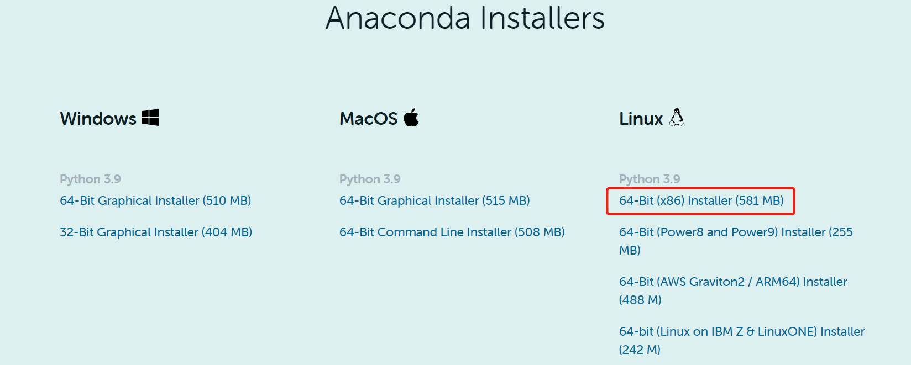
安装Anaconda¶
[zhangsan@node0 ~]$ chmod +x Anaconda3-2021.11-Linux-x86_64.sh
[zhangsan@node0 ~]$ ./Anaconda3-2021.11-Linux-x86_64.sh
# 统一安装到/opt/bigdata/目录下
Anaconda3 will now be installed into this location:
/home/zhangsan/anaconda3
[/home/zhangsan/anaconda3] >>> /opt/bigdata/anaconda3
# 输入yes初始化Anaconda
installation finished.
Do you wish the installer to initialize Anaconda3
by running conda init? [yes|no]
[no] >>> yes
环境变量激活¶
如果你的终端没有出现base，应该是你没有初始化anaconda，这样的话，用户张三使用的依然是系统自带的Python2.x，可以使用下面的方式手动初始化。
手动初始化¶
# 1. 把ANACONDA3_HOME加入环境变量; $ANACONDA3_HOME/bin 加入PATH
[zhangsan@node0 ~]$vim ~/.bashrc
export ANACONDA3_HOME=/opt/bigdata/anaconda3
export PATH=$ANACONDA3_HOME/bin:$PATH
# 2. source 一下环境变量配置文件，这样的话，我们可以使用bin里面的可执行文件了
[zhangsan@node0 ~]$source ~/.bashrc
# 3. 使用source执行一下anaconda3的activate脚本
[zhangsan@node0 ~]$source /opt/bigdata/anaconda3/bin/activate
# 4. 初始化
[zhangsan@node0 ~]$conda init
配置软件源¶
(base) [zhangsan@node0 ~]$ conda config --set show_channel_urls yes
(base) [zhangsan@node0 ~]$ vim .condarc
配置如下
channels:
- defaults
show_channel_urls: true
channel_alias: https://mirrors.tuna.tsinghua.edu.cn/anaconda
default_channels:
- https://mirrors.tuna.tsinghua.edu.cn/anaconda/pkgs/main
- https://mirrors.tuna.tsinghua.edu.cn/anaconda/pkgs/free
- https://mirrors.tuna.tsinghua.edu.cn/anaconda/pkgs/r
- https://mirrors.tuna.tsinghua.edu.cn/anaconda/pkgs/pro
- https://mirrors.tuna.tsinghua.edu.cn/anaconda/pkgs/msys2
custom_channels:
conda-forge: https://mirrors.tuna.tsinghua.edu.cn/anaconda/cloud
msys2: https://mirrors.tuna.tsinghua.edu.cn/anaconda/cloud
bioconda: https://mirrors.tuna.tsinghua.edu.cn/anaconda/cloud
menpo: https://mirrors.tuna.tsinghua.edu.cn/anaconda/cloud
pytorch: https://mirrors.tuna.tsinghua.edu.cn/anaconda/cloud
simpleitk: https://mirrors.tuna.tsinghua.edu.cn/anaconda/cloud
新建Python环境¶
(base) [zhangsan@node0 ~]$ conda create -n python37 python=3.7
# 切换环境
(base) [zhangsan@node0 ~]$ conda activate python37
# 设置zhangsan用户的默认Python环境
(python37) [zhangsan@node3 ~]$ vim .bashrc
conda activate python37
此时，我们完成了CentOS系统下Python3.7的安装。
配置文件¶
spark-env.sh¶
SPARK_LOCAL_IP=127.0.0.1
PYSPARK_DRIVER_PYTHON=/opt/bigdata/anaconda3/envs/python37/bin/python
PYSPARK_PYTHON=/opt/bigdata/anaconda3/envs/python37/bin/python
启动PySpark¶
(python37) [zhangsan@node0 ~]$ cd /opt/bigdata/spark/default/bin/
(python37) [zhangsan@node0 bin]$ ./pyspark
Python 3.7.11 (default, Jul 27 2021, 14:32:16)
... ...
WordCount¶
>>> sc.textFile('hdfs:///input/bigdata.txt').flatMap(lambda x: x.split(" ")).map(lambda x: (x,1)).reduceByKey(lambda a,b: a+b).collect()
[('bigdata', 2), ('hello', 2), ('study', 2)]
spark-submit¶
(python37) [zhangsan@node0 bin]$ ./spark-submit /opt/bigdata/spark/default/examples/src/main/python/pi.py
伪分布式¶
Standalone¶
配置¶
包括 Hadoop配置，Master, Worker的通信地址和Web UI的地址
spark-env.sh（Server）¶
# 如果Worker提示JAVA_HOME is not set, 在此文件配置一下JAVA_HOME
# JAVA_HOME=${JAVA_HOME}
PYSPARK_DRIVER_PYTHON=/opt/bigdata/anaconda3/envs/python37/bin/python
PYSPARK_PYTHON=/opt/bigdata/anaconda3/envs/python37/bin/python
HADOOP_CONF_DIR=/opt/bigdata/hadoop/default/etc/hadoop #读写HDFS
SPARK_MASTER_HOST=node0 # Master节点
SPARK_WORKER_CORES=1 # core
SPARK_WORKER_MEMORY=1g # 内存
# 日志服务器HistoryServer会去指定的位置读取执行事件日志
SPARK_HISTORY_OPTS="-Dspark.history.fs.logDirectory=hdfs://node0:9000/shared/spark-logs"
spark-default-conf（Client）¶
(python37) [zhangsan@node0 conf]$ mv spark-defaults.conf.template spark-defaults.conf
(python37) [zhangsan@node0 conf]$ vim spark-defaults.conf
# spark.master spark://node0:7077
# spark applications 执行的事件日志会存放到指定的位置
spark.eventLog.enabled true
spark.eventLog.dir hdfs://node0:9000/shared/spark-logs
Slave¶
(python37) [zhangsan@node1 conf]$ mv slaves.template slaves
(python37) [zhangsan@node1 conf]$ vim slaves
localhost
启动Spark集群¶
启动HDFS¶
启动History Server¶
启动Spark¶
启动Master和Worker
(python37) [zhangsan@node0 sbin]$ ./start-all.sh
(python37) [zhangsan@node1 sbin]$ jps
5393 `Worker`
5300 `Master`
4582 NodeManager
5447 Jps
4216 SecondaryNameNode
4376 ResourceManager
4027 DataNode
3871 NameNode
14845 `HistoryServer`
Web UI查看¶
可以在windows系统中配置一下hosts映射。
Master : 8080
Worker : 8081
HistoryServer：18080
Driver：4040
测试¶
(python37) [zhangsan@node0 bin]$ ./pyspark --master spark://node0:7077
Python 3.7.11 (default, Jul 27 2021, 14:32:16)
[GCC 7.5.0] :: Anaconda, Inc. on linux
Type "help", "copyright", "credits" or "license" for more information.
22/02/15 12:41:57 WARN util.NativeCodeLoader: Unable to load native-hadoop library for your platform... using builtin-java classes where applicable
Setting default log level to "WARN".
To adjust logging level use sc.setLogLevel(newLevel). For SparkR, use setLogLevel(newLevel).
22/02/15 12:41:59 WARN spark.SparkContext: Please ensure that the number of slots available on your executors is limited by the number of cores to task cpus and not another custom resource. If cores is not the limiting resource then dynamic allocation will not work properly!
Welcome to
____ __
/ __/__ ___ _____/ /__
_\ \/ _ \/ _ `/ __/ '_/
/__ / .__/\_,_/_/ /_/\_\ version 3.0.3
/_/
Using Python version 3.7.11 (default, Jul 27 2021 14:32:16)
SparkSession available as 'spark'.
# 转换算子，不触发计算
# 动作算子Action，触发计算
>>> sc.textFile("hdfs:///input/bigdata.txt").flatMap(lambda line : line.split(" ")).map(lambda word : (word,1)).reduceByKey(lambda a,b : a+b).collect()
[('bigdata', 2), ('hello', 2), ('study', 2)]
可以在 http://node0:4040 下查看driver下job的运行情况。
Spark On YARN¶
配置¶
Spark的Master由YARN的ResourceManager替代，Worker由NodeManager替代。
spark-env.sh¶
HADOOP_CONF_DIR=/opt/bigdata/hadoop/default/etc/hadoop
YARN_CONF_DIR=/opt/bigdata/hadoop/default/etc/hadoop
# 日志服务器HistoryServer配置
SPARK_HISTORY_OPTS="-Dspark.history.fs.logDirectory=hdfs://node0:9000/shared/spark-logs"
spark-defaults.conf¶
(python37) [zhangsan@node0 conf]$ vim spark-defaults.conf
# spark.master spark://node0:7077
# spark app执行的事件日志会存放到指定的位置
spark.eventLog.enabled true
spark.eventLog.dir hdfs://node0:9000/shared/spark-logs
# spark包位置
spark.yarn.archive hdfs://node0:9000/shared/spark-archive
将spark的jar包上传到HDFS
# 在hdfs上创建目录hdfs:node0:9000/shared/spark-archive
(python37) [zhangsan@node0 default]$ hdfs dfs -mkdir /shared/spark-archive
# 将$SPARK_HOME/spark/jars/*.jar上传到hdfs
(python37) [zhangsan@node0 default]$ hdfs dfs -put jars/* /shared/spark-archive
运行SparkApp¶
Spark Application有两种运行模式，Client和Cluster。可以通过 --deploy-mode=client/cluster来指定。在提交Application的时候，可以告诉YARN需要的计算资源。
Client模式¶
Client模式，driver运行在客户端进程中；
实验
Cluster模式¶
Cluster模式，driver运行在YARN容器中ApplicationMaster。
Mesos¶
略。
集群部署¶
如要继续如下步骤，请完成Hadoop全分布式环境的搭建。
集群规划
| Hadoop | spark | |
|---|---|---|
| node1 | NameNode, SecondNameNode, ResourceManager |
Master, Worker, HistoryServer |
| node2 | DataNode, NodeManager |
Worker |
| node3 | DataNode,NodeManager |
Worker |
为三台机器安装Python3.7环境。
Standalone¶
Spark配置¶
包括 Hadoop配置，Master, Worker的通信地址和Web UI的地址
spark-env.sh（Server）¶
spark-default-conf（Client）¶
与伪分布式-Standalone配置基本一致，
此处我们的Master运行在node1节点上，Namenode运行在node1节点上。
因此需要修改一下node0为node1，
Slave¶
(python37) [zhangsan@node1 conf]$ mv slaves.template slaves
(python37) [zhangsan@node1 conf]$ vim slaves
node1
node2
node3
将修改好的spark分发到其他两个节点。
启动¶
启动HDFS¶
启动Spark¶
启动Master和Worker
node1
# 启动HistoryServer
(python37) [zhangsan@node1 sbin]$ ./start-history-server.sh
# 启动Master和所有Worker
(python37) [zhangsan@node1 sbin]$ ./start-all.sh
(python37) [zhangsan@node1 sbin]$ jps
5393 Worker
5300 Master
4582 NodeManager
5447 Jps
4216 SecondaryNameNode
4376 ResourceManager
4027 DataNode
3871 NameNode
14845 HistoryServer
node2
node3
Web UI查看¶
可以在windows系统中配置一下hosts映射。
# C:\Windows\System32\drivers\etc\hosts
192.168.179.100 node0
192.168.179.101 node1
192.168.179.102 node2
192.168.179.103 node3
Master : 8080
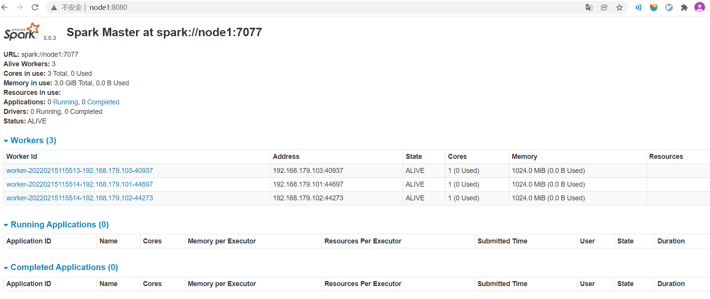
Worker : 8081
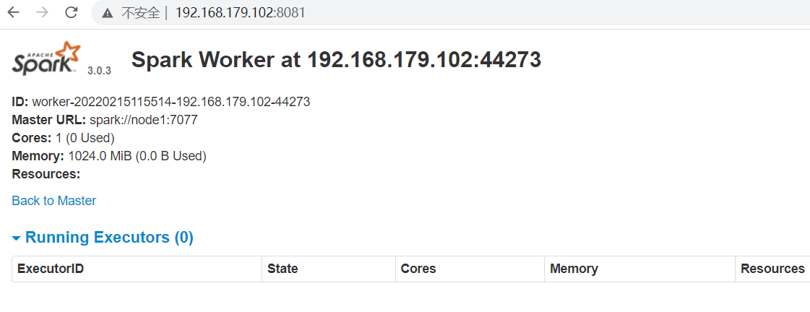
测试集群¶
(python37) [zhangsan@node1 bin]$ ./pyspark --master spark://node1:7077
Python 3.7.11 (default, Jul 27 2021, 14:32:16)
[GCC 7.5.0] :: Anaconda, Inc. on linux
Type "help", "copyright", "credits" or "license" for more information.
22/02/15 12:41:57 WARN util.NativeCodeLoader: Unable to load native-hadoop library for your platform... using builtin-java classes where applicable
Setting default log level to "WARN".
To adjust logging level use sc.setLogLevel(newLevel). For SparkR, use setLogLevel(newLevel).
22/02/15 12:41:59 WARN spark.SparkContext: Please ensure that the number of slots available on your executors is limited by the number of cores to task cpus and not another custom resource. If cores is not the limiting resource then dynamic allocation will not work properly!
Welcome to
____ __
/ __/__ ___ _____/ /__
_\ \/ _ \/ _ `/ __/ '_/
/__ / .__/\_,_/_/ /_/\_\ version 3.0.3
/_/
Using Python version 3.7.11 (default, Jul 27 2021 14:32:16)
SparkSession available as 'spark'.
>>> sc.textFile("/input/bigdata.txt").flatMap(lambda line : line.split(" ")).map(lambda word : (word,1)).reduceByKey(lambda a,b : a+b).collect()
[('bigdata', 2), ('hello', 2), ('study', 2)]
可以在 http://node1:4040 下查看driver下job的运行情况。
Spark On YARN¶
Spark On YARN， 只需要在一个节点上部署Spark，Spark的Master由YARN的ResourceManager替代，Worker由NodeManager替代。
spark-env.sh¶
spark-defaults.conf¶
与伪分布式-YARN配置基本一致，不同的是，此处我们的Namenode运行在node1节点上，因此需要修改一下node0为node1，
Jupyter notebook¶
(python37) [zhangsan@node0 ~]$ pip install jupyter notebook
(python37) [zhangsan@node0 ~]$ jupyter notebook --generate-config
(python37) [zhangsan@node0 ~]$ vim ~/.jupyter/jupyter_notebook_config.py
Windows开发环境¶
Python版¶
Anaconda¶
下载地址：
https://www.anaconda.com/products/individual#Downloads
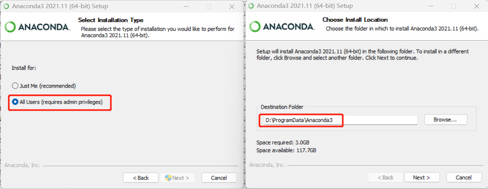
# 此命令将会在用户目录产生一个conda配置文件，名字为.condarc
(base) PS C:\Users\xiaoqu> conda config --set show_channel_urls yes
# 使用记事本打开conda的配置文件.condarc
(base) PS C:\Users\xiaoqu> notepad .\.condarc
# 加入如下配置（原内容清空）
channels:
- defaults
show_channel_urls: true
channel_alias: https://mirrors.tuna.tsinghua.edu.cn/anaconda
default_channels:
- https://mirrors.tuna.tsinghua.edu.cn/anaconda/pkgs/main
- https://mirrors.tuna.tsinghua.edu.cn/anaconda/pkgs/free
- https://mirrors.tuna.tsinghua.edu.cn/anaconda/pkgs/r
- https://mirrors.tuna.tsinghua.edu.cn/anaconda/pkgs/pro
- https://mirrors.tuna.tsinghua.edu.cn/anaconda/pkgs/msys2
custom_channels:
conda-forge: https://mirrors.tuna.tsinghua.edu.cn/anaconda/cloud
msys2: https://mirrors.tuna.tsinghua.edu.cn/anaconda/cloud
bioconda: https://mirrors.tuna.tsinghua.edu.cn/anaconda/cloud
menpo: https://mirrors.tuna.tsinghua.edu.cn/anaconda/cloud
pytorch: https://mirrors.tuna.tsinghua.edu.cn/anaconda/cloud
simpleitk: https://mirrors.tuna.tsinghua.edu.cn/anaconda/cloud
# 创建一个Python 3.7 的环境，环境名称命名为python37
(base) PS C:\Users\xiaoqu> conda create -n python37 python=3.7
# 查看本机Python环境列表
(base) PS C:\Users\xiaoqu> conda env list
# 激活python37环境
(base) PS C:\Users\xiaoqu> conda activate python37
# 安装PySpark类库
(python37) PS C:\Users\xiaoqu> conda install pyspark
PyCharm¶
安装PyCharm¶
本文使用的是PyCharm 2021.2.2 Professional版本。
下载地址：
https://www.jetbrains.com/pycharm/download/other.html
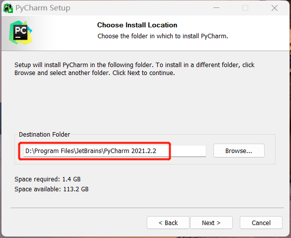
激活略。
配置PyCharm¶
使用本地Python解释器¶
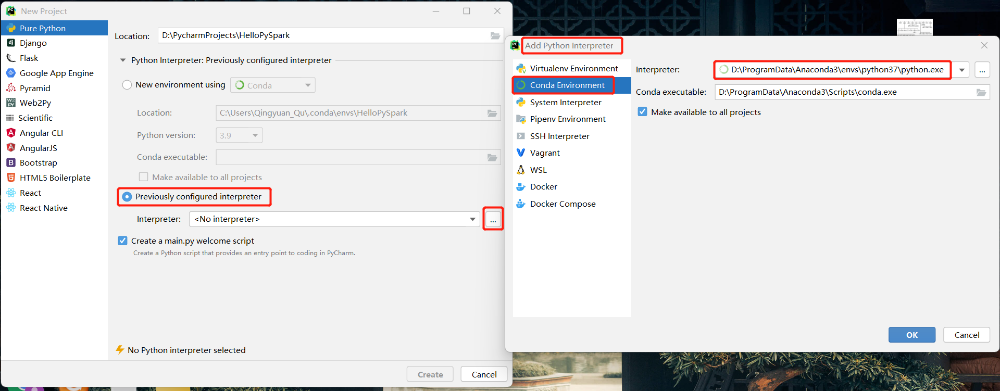
使用集群Python解释器¶
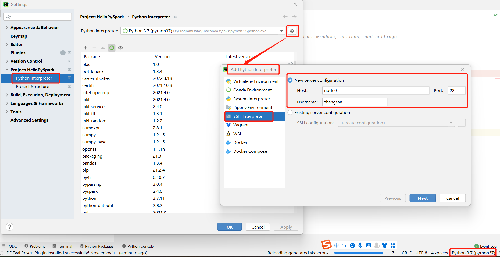
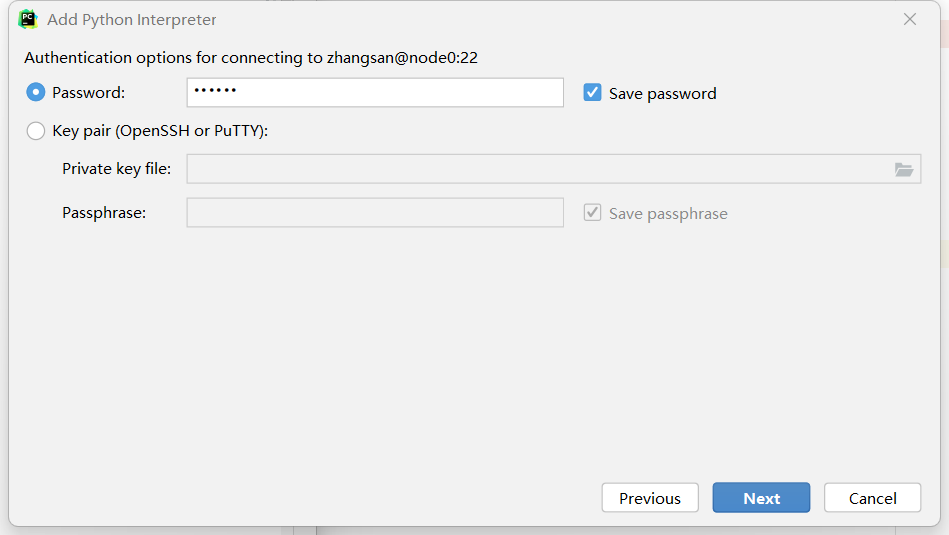
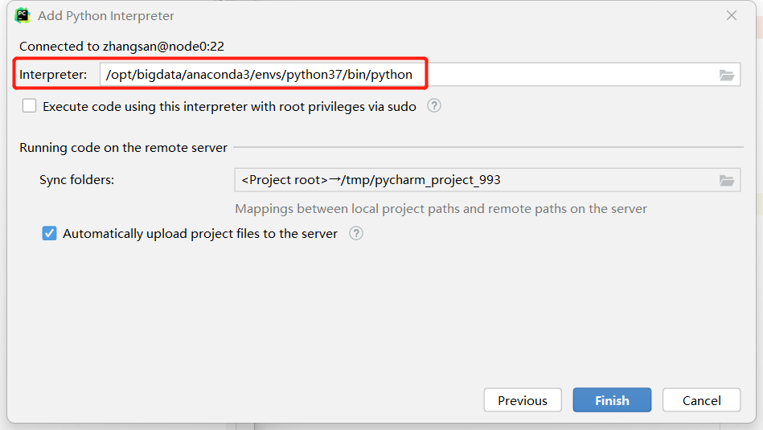
在服务器的Python环境中安装PySpark类库：
- 在线安装
PySpark
- 本地安装
PySpark
(python37) [zhangsan@node0 ~]$ cd /opt/bigdata/spark/default/python
(python37) [zhangsan@node0 python]$ python setup.py install
Finished processing dependencies for pyspark==2.4.8
Application提交¶
- 在
HDFS创建文件bigdata.txt -
代码编写
-
bin/spark-submit ~/wordcount.py
Local¶
本地运行，可在HistoryServer看到执行情况
from pyspark import SparkContext, SparkConf
if __name__ == '__main__':
conf = SparkConf().setMaster("local[*]").setAppName('wordcount')
sc = SparkContext(conf=conf)
result = sc.textFile("hdfs://node0:9000/user/zhangsan/bigdata.txt").flatMap(lambda line: line.split(" ")).\
map(lambda word:(word,1)).reduceByKey(lambda a,b:a+b).collect()
print(result)
Standalone¶
from pyspark import SparkContext, SparkConf
if __name__ == '__main__':
conf = SparkConf().setMaster("spark://node0:7077").setAppName('wordcount')
sc = SparkContext(conf=conf)
result = sc.textFile("hdfs://node0:9000/user/zhangsan/bigdata.txt").flatMap(lambda line: line.split(" ")).\
map(lambda word:(word,1)).reduceByKey(lambda a,b:a+b).collect()
print(result)
YARN¶
YARN Client¶
from pyspark import SparkContext, SparkConf
if __name__ == '__main__':
conf = SparkConf().setMaster("yarn").set("deployMode","client").setAppName('wordcount')
sc = SparkContext(conf=conf)
result = sc.textFile("hdfs://node0:9000/user/zhangsan/bigdata.txt").flatMap(lambda line: line.split(" ")).\
map(lambda word:(word,1)).reduceByKey(lambda a,b:a+b).collect()
print(result)
YARN Cluster¶
from pyspark import SparkContext, SparkConf
if __name__ == '__main__':
conf = SparkConf().setMaster("yarn").set("deployMode","cluster").setAppName('wordcount')
sc = SparkContext(conf=conf)
result = sc.textFile("hdfs://node0:9000/user/zhangsan/bigdata.txt").flatMap(lambda line: line.split(" ")).\
map(lambda word:(word,1)).reduceByKey(lambda a,b:a+b).collect()
print(result)
Scala版¶
查看Scala版本¶
[zhangsan@node0 bin]$ ./spark-shell
Spark context Web UI available at http://node0:4040
Spark context available as 'sc' (master = local[*], app id = local-1648259787148).
Spark session available as 'spark'.
Welcome to
____ __
/ __/__ ___ _____/ /__
_\ \/ _ \/ _ `/ __/ '_/
/___/ .__/\_,_/_/ /_/\_\ version 2.4.8
/_/
Using Scala version 2.11.12 (Java HotSpot(TM) 64-Bit Server VM, Java 1.8.0_202)
使用IDEA新建scala工程¶
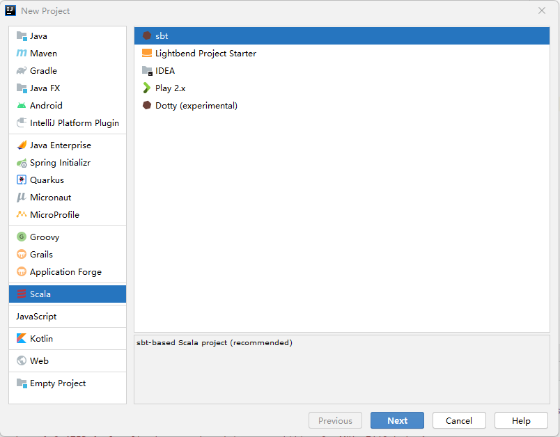
配置工程属性¶
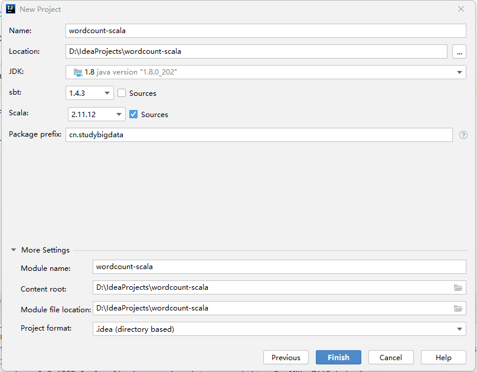
代码编写¶
package com.studybigdata
import org.apache.spark.{SparkConf, SparkContext}
object WordCountScala {
def main(args: Array[String]): Unit = {
val conf = new SparkConf().setAppName("WordCountScala").setMaster("local");
val sc = new SparkContext(conf)
val result = sc.textFile("hdfs://node0:9000/user/zhangsan/bigdata.txt").flatMap(_.split(" ")).map((_, 1)).reduceByKey(_ + _)
result.foreach(println)
sc.stop()
}
}
Local-Jars¶
引入Jar包¶
配置Spark类库¶
: Unit = {
val conf = new SparkConf().setAppName("WordCountScala")
val sc = new SparkContext(conf)
//WordCount
val result = sc.textFile(args(0)).flatMap(_.split(" ")).map((_, 1)).reduceByKey(_ + _)
//结果输出到container的日志中
result.foreach(println)
//结果输出到HDFS
result.saveAsTextFile(args(1))
//结果收集:
//collect() 会将结果收集到Driver的内存中
//在Client模式下，Driver运行在客户端进程中，因此println会将收集的结果输出到控制台；
//在Cluster模式下，Driver在AM内，collect会将结果输出到AM所在Container的日志中。
result.collect().foreach(println)
sc.stop()
}
}
打包¶
https://www.jianshu.com/p/8a0799201685
Build --> Build Artifacts --> Build
Cluster¶
执行¶
(python37) [zhangsan@node0 bin]$ ./spark-submit --master yarn --deploy-mode cluster --class com.studybigdata.WordCountScala wordcount_artifact.jar hdfs://node0:9000/user/zhangsan/bigdata.txt hdfs://node0:9000/user/zhangsan/out
22/03/26 14:45:19 INFO yarn.YarnAllocator: Launching container container_1648172380450_0024_01_000002 on host node0 for executor with ID 1
22/03/26 14:45:20 INFO yarn.YarnAllocator: Launching container container_1648172380450_0024_01_000003 on host node0 for executor with ID 2
结果输出到Container日志¶
- Container-1
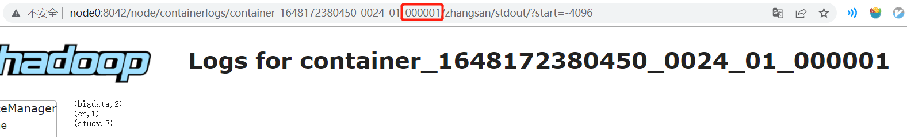
- Container-2
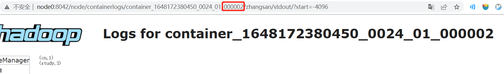
- Container-3
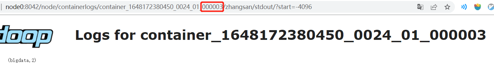
结果输出到HDFS¶
(python37) [zhangsan@node0 bin]$ hdfs dfs -cat out/part-00000
(bigdata,2)
(python37) [zhangsan@node0 bin]$ hdfs dfs -cat out/part-00001
(cn,1)
(study,3)
Client¶
执行¶
(python37) [zhangsan@node0 bin]$ ./spark-submit --master yarn --deploy-mode client --class com.studybigdata.WordCountScala wordcount_artifact.jar hdfs://node0:9000/user/zhangsan/bigdata.txt hdfs://node0:9000/user/zhangsan/out
结果输出到控制台¶
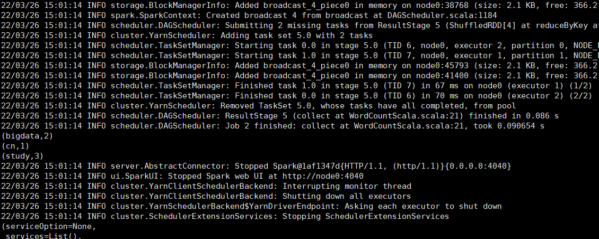
结果输出到Container日志¶
略。
结果输出到HDFS¶
略。